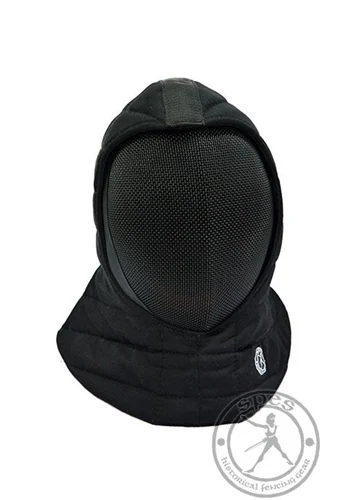
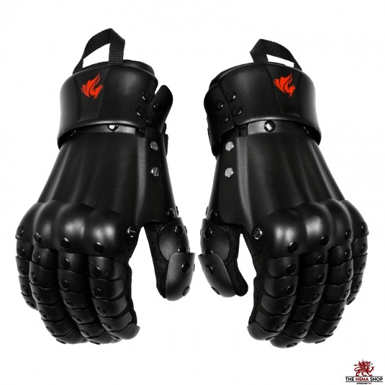
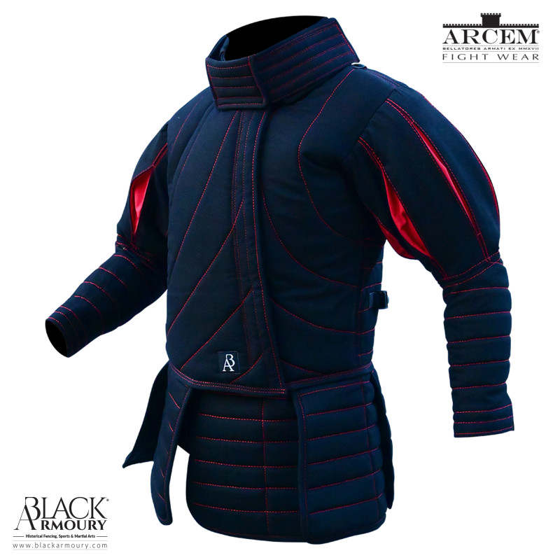
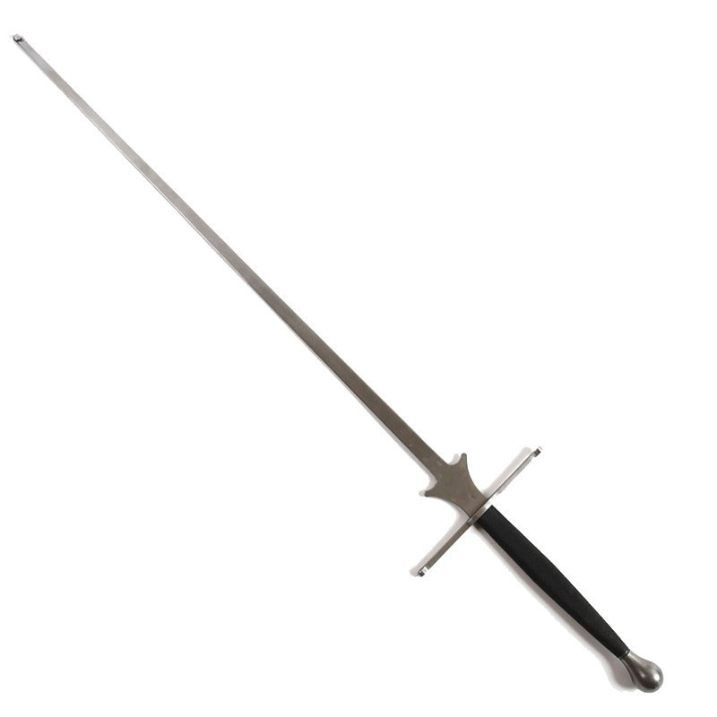

HEMA stands for Historical European Martial Arts. In short, HEMA is a modernized version of historical fencing techniques. HEMA competitors use blunted steel replicas of historical weapons and make every effort to maximize realism while remaining safe. HEMA is a combat sport/martial art, like karate or boxing, but is much newer and still isn't known well. Common types of HEMA gear include masks, feders/blunt swords, jackets, and gloves.
A mask is used for head protection. HEMA masks are rated for higher impacts than Olympic-style fencing, 800 newtons is the standard for longsword sparring.
Gloves are used for hand protection. Mitten-style gloves are most recommended for longsword sparring, but gloves with articulated fingers are acceptable for single-handed swords. All HEMA gloves used for slicing swords have hard plastic or metal covering for safety.
HEMA jackets are thick, padded jackets used to absorb impact and prevent abrasions. In the case of a sword breaking, severe jagged edges can be present and the jacket will protect the wearer from getting sliced.
A feder is a type of practice sword which was historically used for sparring. The blades are thinner across and have thicker edges, leading to a distinctive shape. The idea of this is to increase the striking surface area in order to minimize damage to the opponent. It is also common to use blunted swords, which often behave more realistically but can hurt more when struck. All safe HEMA swords should be extra blunt on the tip and flex more than a real sword in order to ensure safety and shock absorption when used in stabbing.
This project is a database for a HEMA storefront. It will list and organize orders of HEMA gear, including blunted weapons and protective equipment. Most HEMA suppliers are small and lack good organizational systems.